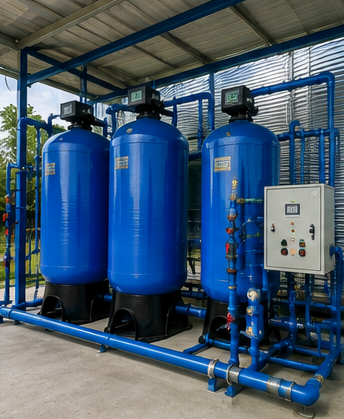
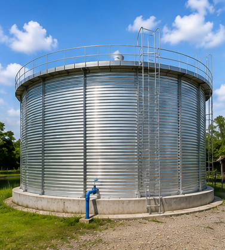
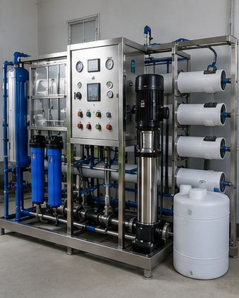
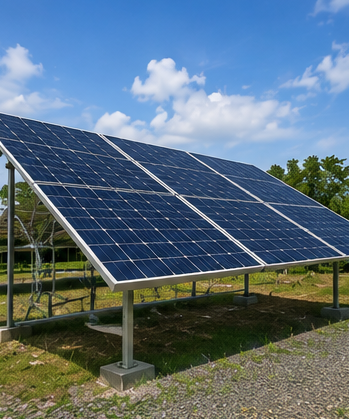
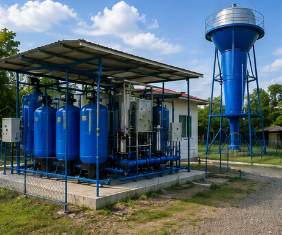
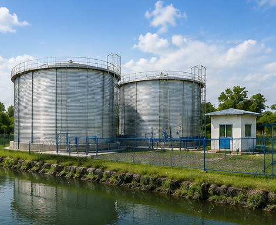
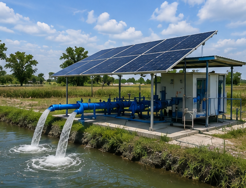
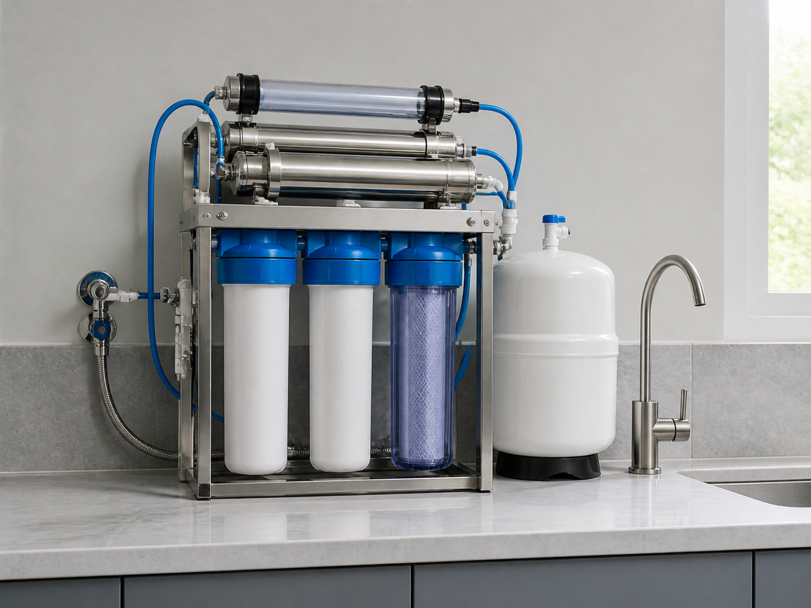

ระบบกรองน้ำ
ปรับคุณภาพน้ำให้เหมาะกับการอุปโภค บริโภค และอุตสาหกรรม
ขอบเขตงานออกแบบ · ผลิต · ติดตั้ง · ทดสอบ

รับออกแบบ ผลิต ติดตั้ง และส่งมอบระบบผลิตน้ำสะอาด ถังเก็บน้ำ ระบบจ่ายน้ำ และระบบพลังงานแสงอาทิตย์ ดูแลตั้งแต่วิเคราะห์น้ำต้นทางจนถึงเดินระบบและบำรุงรักษา — สำหรับชุมชน หน่วยงานภาครัฐ โรงงาน และภาคการเกษตร
ทุกงานเริ่มจากผลวิเคราะห์คุณภาพน้ำต้นทาง แล้วออกแบบระบบเฉพาะพื้นที่ ผลิตชุดอุปกรณ์ ติดตั้ง ทดสอบเดินระบบ และส่งมอบพร้อมแผนบำรุงรักษา

ปรับคุณภาพน้ำให้เหมาะกับการอุปโภค บริโภค และอุตสาหกรรม

ถังเก็บและสำรองน้ำสำหรับชุมชน โรงงาน และโครงการขนาดใหญ่

ระบบผลิตน้ำประปาและน้ำดื่มที่ออกแบบตามคุณภาพน้ำต้นทาง

ลดค่าใช้จ่ายด้านพลังงานและเพิ่มความยั่งยืนให้ระบบผลิตน้ำ
เราดูแลทุกขั้นตอน ตั้งแต่วิเคราะห์คุณภาพน้ำ ออกแบบระบบ ติดตั้ง ทดสอบ ไปจนถึงบำรุงรักษา
ระบบประปาหมู่บ้านและจุดจ่ายน้ำดื่ม รองรับการใช้น้ำร่วมกันของหลายครัวเรือน
งาน อบต. เทศบาล และหน่วยงานภาครัฐ พร้อมเอกสารประกอบการจัดซื้อจัดจ้าง
น้ำใช้ในกระบวนการผลิต ระบบสำรองน้ำ และการปรับคุณภาพน้ำตามข้อกำหนดของโรงงาน
ระบบสูบและจ่ายน้ำด้วยพลังงานแสงอาทิตย์ สำหรับพื้นที่ที่ไฟฟ้าเข้าไม่ถึง
เราไม่ได้ขายอุปกรณ์แยกชิ้น แต่รับผิดชอบทั้งระบบ ตั้งแต่ออกแบบจากผลวิเคราะห์น้ำจริงในพื้นที่ จนถึงส่งมอบและดูแลต่อเนื่อง
คุยกับทีมวิศวกรออกแบบระบบตามสภาพน้ำจริงในพื้นที่
เลือกอุปกรณ์ตามมาตรฐานวิศวกรรม
ติดตั้งและทดสอบโดยทีมงานผู้เชี่ยวชาญ
รองรับการทำงานร่วมกับระบบพลังงานแสงอาทิตย์
ดูแลหลังการขายและงานบำรุงรักษา
ปรับขนาดระบบตามความต้องการของโครงการ

รอข้อมูลจริงจากบริษัท: ขอบเขตงาน กำลังผลิต และภาพหน้างาน

รอข้อมูลจริงจากบริษัท: ความจุถัง โครงสร้างฐาน และระบบควบคุมระดับน้ำ

รอข้อมูลจริงจากบริษัท: ขนาดแผง กำลังปั๊ม และปริมาณน้ำต่อวัน

รอข้อมูลจริงจากบริษัท: มาตรฐานน้ำ ผลตรวจคุณภาพ และจุดจ่ายน้ำ
เก็บตัวอย่างน้ำ ตรวจสอบสภาพพื้นที่และปริมาณการใช้น้ำ
กำหนดผังระบบ อุปกรณ์ และขนาดถัง พร้อมประมาณราคา
ผลิตชุดอุปกรณ์ ติดตั้งงานระบบท่อ ปั๊ม และแผงโซลาร์
ทดสอบเดินระบบ ตรวจคุณภาพน้ำ และอบรมผู้ใช้งาน
บำรุงรักษาตามรอบ เปลี่ยนสารกรอง และให้คำปรึกษาต่อเนื่อง
ส่งรายละเอียดพื้นที่และความต้องการใช้น้ำ ทีมวิศวกรจะประเมินแนวทางระบบและขอบเขตงานให้เบื้องต้น
ทีมงานจะติดต่อกลับภายใน 1–2 วันทำการ